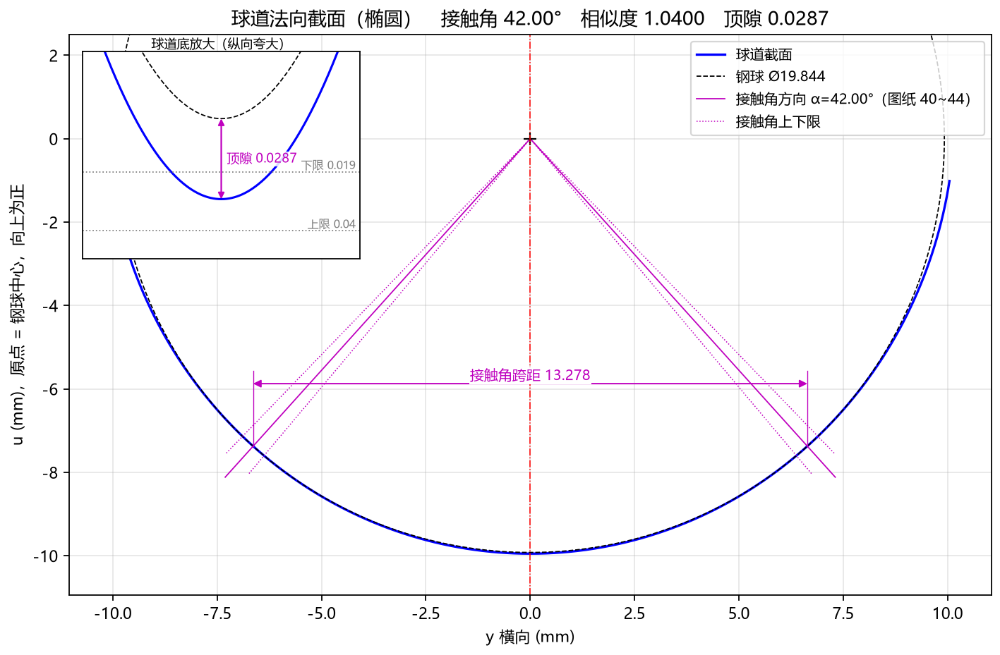
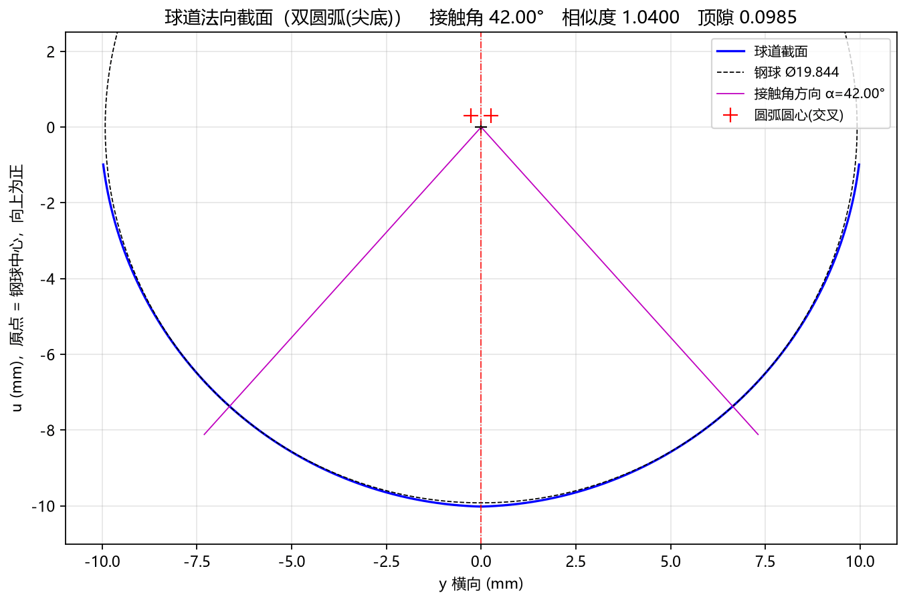

5.2 Tab 2：球道截面 (Ctrl+2)
球道截面 标签页展示垂直于球道中心轨迹切开的球道法向截面（Normal Cross-Section）。该视图与星形套产品图纸上的“球道法向截面放大图”完全对应，用于直观核对球道截面几何形状、接触角 、相似度 以及底部顶隙 。
一、椭圆截面与点表截面视图解读
当 截面类型 选择 椭圆 或 点表(CSV) 时，图表显示如下：

1. 标题栏摘要与坐标系定义
- 顶部标题栏：直接汇总当前截面类型及三项核心指标，例如：
球道法向截面 (椭圆) 接触角 42.00° 相似度 1.0400 顶隙 0.0287 - 横轴
y 横向 (mm)：球道法向截面的水平宽度方向。中央红色竖直点划线y = 0为球道对称中心线，左右槽壁对称分布。 - 纵轴
u (mm)，原点 = 钢球中心，向上为正：球道法向截面的深度方向。- 原点 ：钢球落入球道并与左右槽壁形成接触角 时的理论钢球球心位置（图中标有黑色小十字
+）。
- 原点 ：钢球落入球道并与左右槽壁形成接触角 时的理论钢球球心位置（图中标有黑色小十字
2. 图例与几何元素含义
- 蓝色粗实线（
球道截面）：球道法向截面的设计轮廓（已包含高级参数中的法向余量偏置）； - 黑色细虚线圆（
钢球 Ø19.844）：处于名义装配接触位置、直径为 的理论钢球轮廓； - 洋红色细实线（
接触角方向 α=42.00°）：从钢球球心 引向左右两侧球道接触点的法线。该法线与水平轴的夹角即为接触角 ，直观展示钢球与球道槽壁的“两点角接触”位置； - 底部顶隙区（
y = 0, u ≈ -9.95 mm）：在球道正底部中央，蓝色球道底位于黑色虚线钢球底面下方微小距离处，两者之间的竖直间隙即为顶隙 （默认参数下为0.0287 mm）。
交互看图技巧：由于顶隙 通常仅有
0.01 ~ 0.04 mm，在全局视图下底部蓝线与黑虚线看似重合。您可以点击底部工具栏的[框选放大 Zoom]，在底部 附近拉框放大，即可清晰观察到球道底与钢球底之间的微米级顶隙裕量！
二、双圆弧（尖底/哥德式）截面视图解读
当 截面类型 选择 双圆弧(尖底) 时，图表除了展示上述元素外，还会额外标出左右两段偏心圆弧的圆心位置：

双圆弧截面的独有特征
- 红色十字标记
+（圆弧圆心(交叉)）：- 在钢球球心 上方两侧，标有两个红色
+号，分别代表左、右两段圆弧槽壁的曲率中心； - 左侧球道圆弧的圆心位于中心线右侧（ 侧），右侧球道圆弧的圆心位于中心线左侧（ 侧），形成典型的“交叉偏心圆心”，且圆心连线严格落在洋红色接触角法线延长线上。
- 在钢球球心 上方两侧，标有两个红色
- 哥德式尖底与更大顶隙：
- 左右两段圆弧在底部中央
y = 0处相交，形成明显的哥德式拱形尖底，顶部标题栏同步显示出增大后的实际顶隙（如顶隙 0.0985）。
- 左右两段圆弧在底部中央